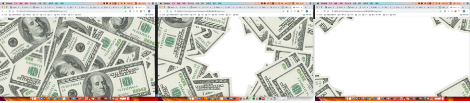

原生JS实现美元图片四周散开的动画效果
这篇文章发布于 2019/10/26，归类于 JavaScript
标签：
原生JS实现遮罩动画，js实现美元图片四周散开动画效果，js实现美元各方向散开的动画效果
之前一朋友在微信群里问，是否能做一个动画，在每次进入页面的时候，实现美元钞票向四周扩散的效果，也就是一个遮罩动画。当时刚看完js高程3不久，就用原生js写了个动画，如果页面需要这个动画，只需要引入一个js就可以。
demo github地址：原生JS实现遮罩动画demo - github
在线演示：演示效果

思路是，一进入页面，在4个边角的区域生成 n 张图片，这个n可配置。然后每个区块设置不同的css，指定不同的动画效果，像四散开，下面是核心代码
// 立即执行函数，防止污染全局作用域
(function() {
console.log('>>> mask Animation load.')
const MA_CONFIG = {
count: 10, // 每个区块 count 张图片
part: 8, // part 个区块
imgSrc: './demo.png',
imgWidth: "60vw", // 图片宽度
partArr: [ // 区块定位
["top", "left"],
["top", "right"],
["bottom", "left"],
["bottom", "right"],
["top", "left"],
["top", "right"],
["bottom", "left"],
["bottom", "right"],
["top", "left"],
["bottom", "right"],
]
}
// 函数
let _getCountGap = item => Math.round(Math.random() * 400 - 100)
let _getRotate = item => Math.round(Math.random() * 360)
let _getArr = count => new Array(count).fill('-')
let tempFragment = document.createDocumentFragment()
let tempArrCount = _getArr(MA_CONFIG.count)
let tempArrPart = _getArr(MA_CONFIG.part)
// 处理图片
tempArrCount.forEach(() => {
tempArrPart.forEach((item, index)=> {
let img = new Image()
img.src = MA_CONFIG.imgSrc
img.setAttribute('class', "ma_" + MA_CONFIG.partArr[index].join('-'))
Object.assign(img.style, {
width: MA_CONFIG.imgWidth,
position: "absolute",
transform: `rotate(${_getRotate()}deg)`,
[MA_CONFIG.partArr[index][0]]: `${_getCountGap()}px`,
[MA_CONFIG.partArr[index][1]]: `${_getCountGap()}px`,
})
tempFragment.appendChild(img)
})
})
window.onload = ()=> {
// 将图片挂载到dom
const div = document.createElement('div')
div.appendChild(tempFragment)
document.body.appendChild(div)
// 准备挂载样式
const styleElement = document.createElement('style')
document.head.appendChild(styleElement)
let sheet = document.styleSheets[0];
// 暂时写死，其实可以用js处理下，更健壮，但可读性会降低
const styleArr = [
`.ma_top-left {
animation: ma_moveTopLeft ease-in 2s;
}`,
`.ma_top-right {
animation: ma_moveTopRight ease-in 2s;
}`,
`.ma_bottom-left{
animation: ma_moveBottomLeft ease-in 2s;
}`,
`.ma_bottom-right {
animation: ma_moveBottomRight ease-in 2s;
}`,
`@keyframes ma_moveTopLeft {
from {}
to {
top: -1000px;
left: -1000px;
}
}`,
`@keyframes ma_moveTopRight {
from {}
to {
top: -1000px;
right: -1000px;
}
}`,
`@keyframes ma_moveBottomLeft {
from {}
to {
bottom: -1000px;
left: -1000px;
}
}`,
`@keyframes ma_moveBottomRight {
from {}
to {
bottom: -1000px;
right: -1000px;
}
}`
]
// 挂载样式
styleArr.forEach((item)=> {
sheet.insertRule(item, 0)
})
// 2s 后卸载样式及dom
setTimeout(()=> {
document.body.removeChild(div)
document.head.removeChild(styleElement)
}, 2000)
}
})()